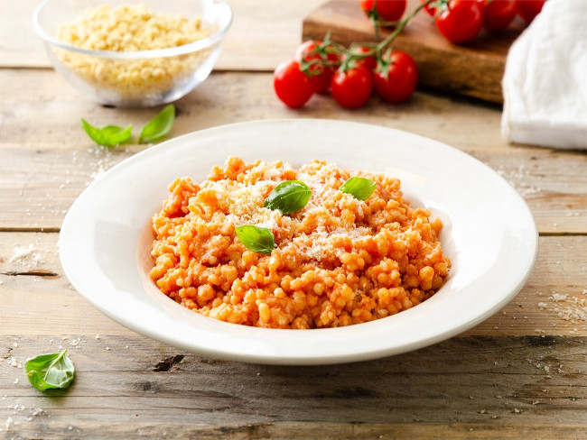

Fregola al pomodoro

Ingredienti
• 200 g di fregola sarda• abbondante pecorino grattugiato
• un ciuffo di basilico
• sale
• sugo di pomodoro
Procedimento:
1) Per realizzare la fregola al pomodoro mettete a bollire una quantità d’acqua che sia il doppio della quantità di fregola. Al bollore salatela, versatevi a pioggia la fregola e cuocetela per circa un quarto d’ora mescolando un paio di volte con delicatezza. Quando l’acqua sarà completamente assorbita assaggiate la fregola che dovrà essere cotta pur rimanendo piuttosto al dente.
2) Condite con il sugo di pomodoro a piacere e abbondante pecorino grattugiato. Lasciate stufare per altri cinque minuti quindi togliete dal fuoco e mantecate con un'altra spolverata di pecorino. Suddividetela nei singoli piatti, decorate con qualche fogliolina di basilico e servite subito la fregola al pomodoro con altro formaggio a piacere.